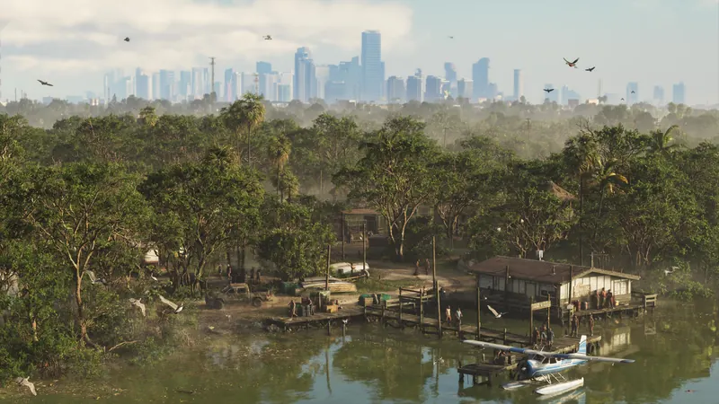

Can you play GTA 6 on PS4 or Xbox One?
Short answer
There's no PS4 or Xbox One version. On Xbox One you can stream it through Xbox Cloud Gaming; on PS4 there's no option.

Official platforms
GTA 6 is out only on PS5 and Xbox Series X|S, as Rockstar's launch announcement says.
Xbox One: through the cloud
Rockstar's support site confirms GTA 6 is available through Xbox Cloud Gaming on Xbox Series X|S and Xbox One consoles, using Series S graphics settings. Rockstar only mentions Xbox consoles, not PC or phones, and warns that connection speed can affect performance.
Rockstar doesn't spell out which subscription or purchase is required, and the Xbox Store listing only says “Cloud Gaming on Xbox consoles.” Check on your console before paying.
PS4
There's no PS4 version and no cloud option for PS4. Rockstar says the game supports Remote Play, but Remote Play streams from a PS5 you own, so it doesn't help if you only have a PS4.
What about Nintendo Switch 2, Steam or Game Pass?
Rockstar has only released GTA 6 on PS5 and Xbox Series X|S. There's no Nintendo Switch 2 or PC version, so it isn't on Steam either (more in GTA 6 on PC). Rockstar hasn't announced GTA 6 for Game Pass.
Sources
- Rockstar Support: GTA VI platforms, editions and versions
- Rockstar Newswire: Grand Theft Auto VI Now Available (Nov 19, 2026)
- Kotaku: 30fps, PSSR and Xbox Cloud
Written by Six Stars from the sources above, checked on November 20, 2026. Spot a mistake? Tell us via About us.